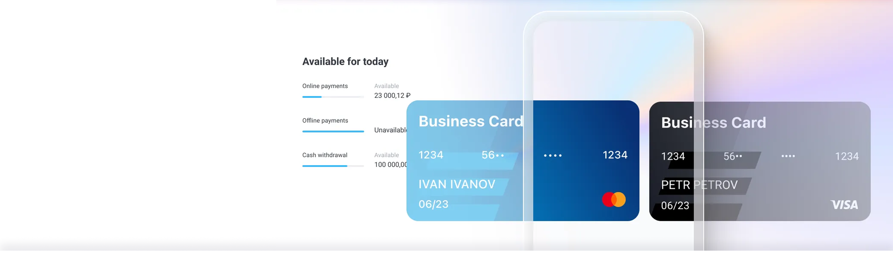
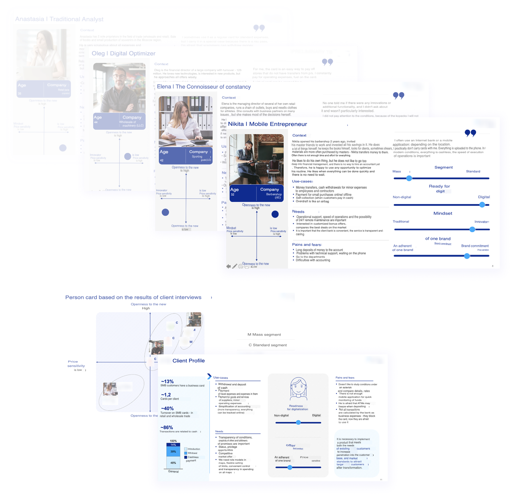
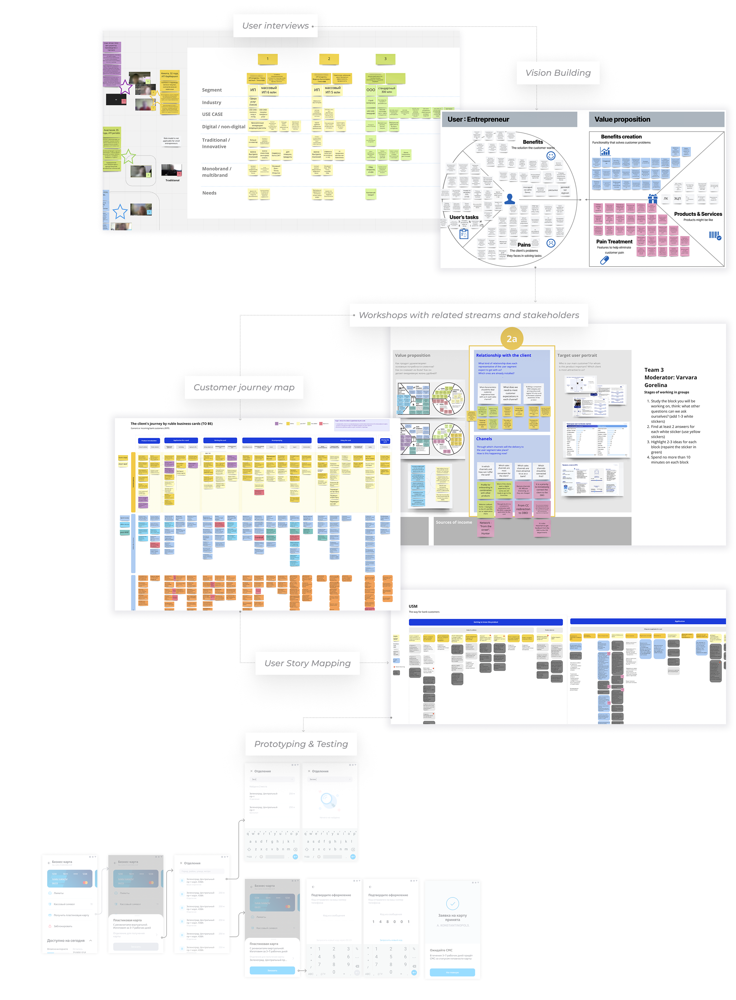
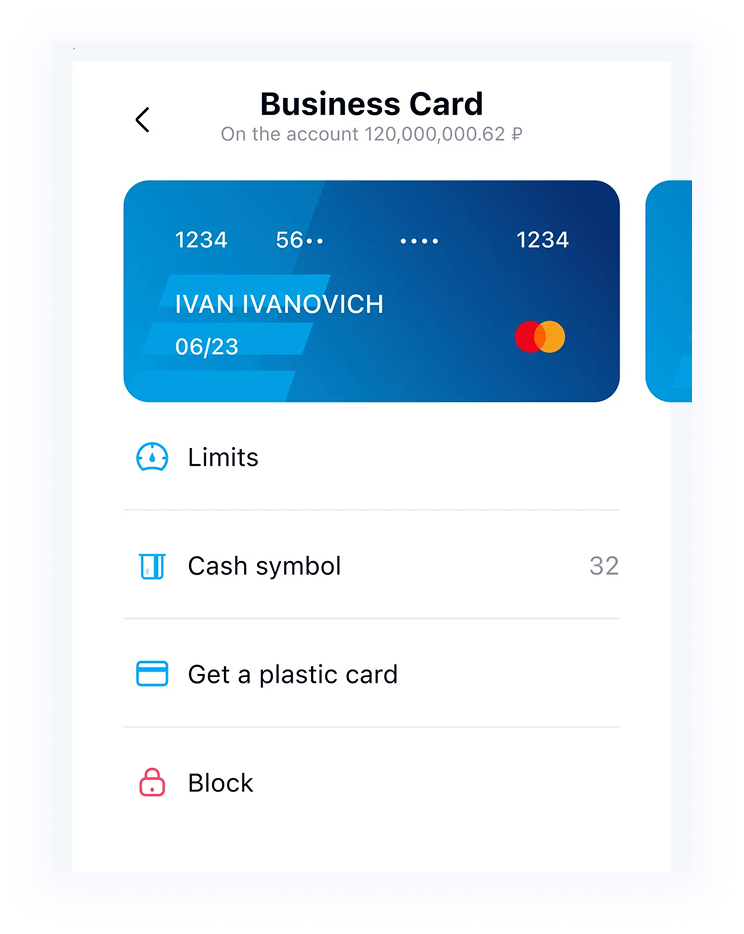
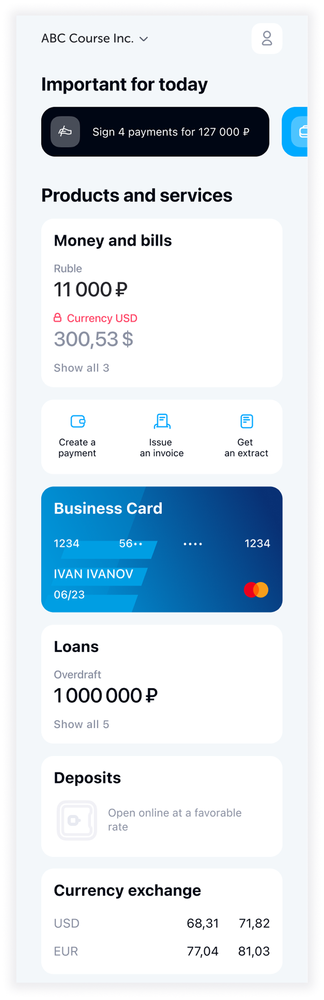
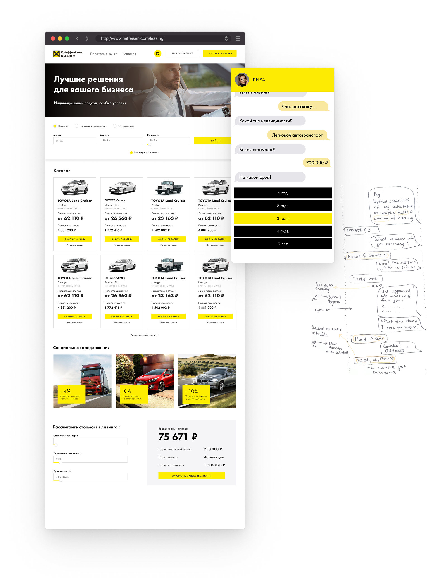
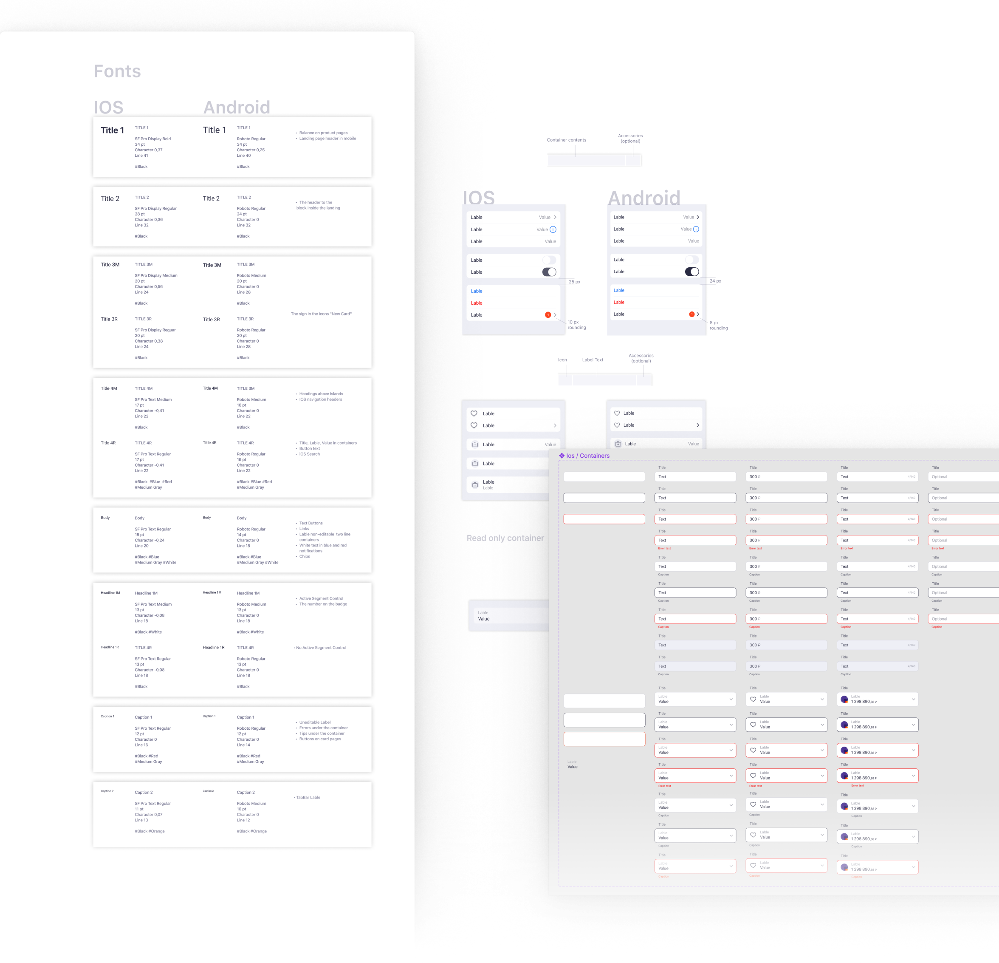

Follow the prototype link and try to complete the task:You have a digital card. You want to get a plastic card

Follow the prototype link and try to complete the task:You couldn't withdraw money from your card. You log into a mobilebank to prohibit the use of a card to pay for offline purchasesand increase the limit for cash withdrawals by 100 thousand

